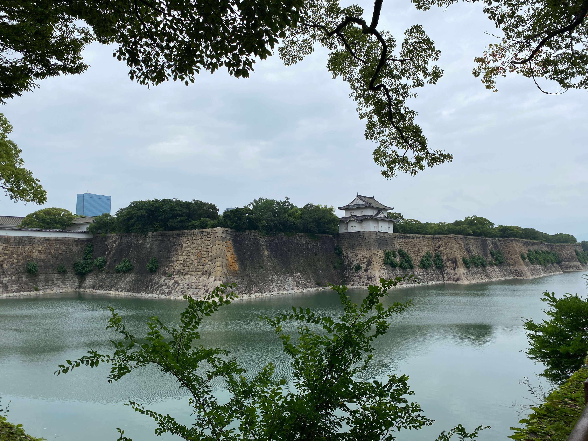
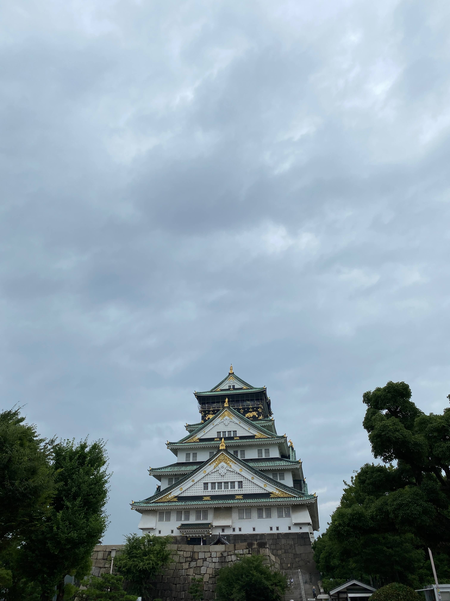
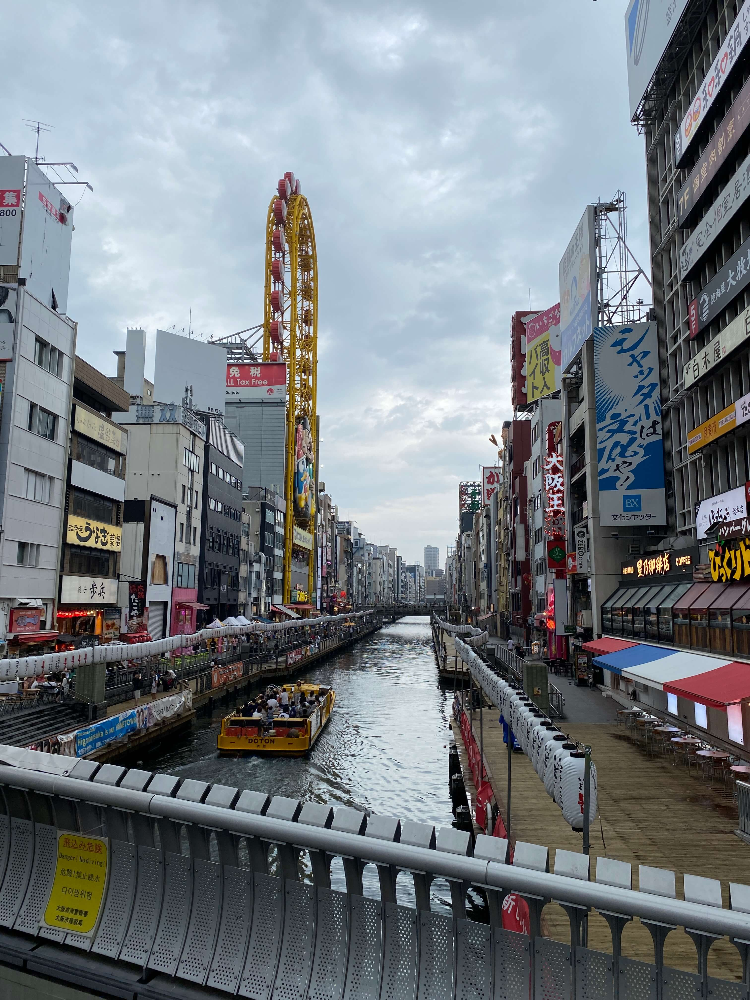
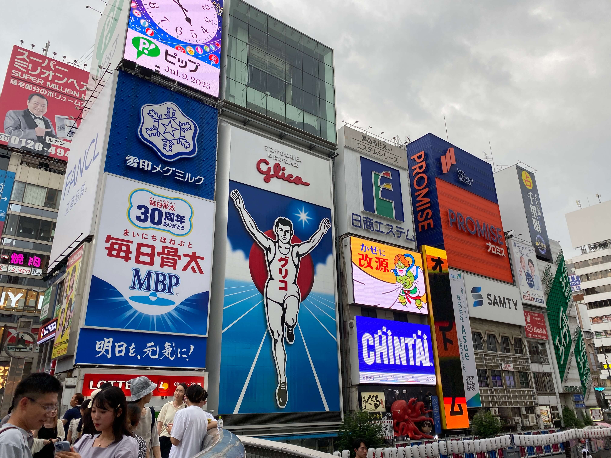

Na Kyoto zijn we met een 15 minuten Shinkansen trip naar Osaka gegaan. Hier hebben we een paar nachtjes gezeten en hebben we van de lopende band sushi gegeten. Verder vonden we het niet superduper bijzonder en bedachten we ons dat we de grote steden een beetje zat waren




Terug naar de kaart